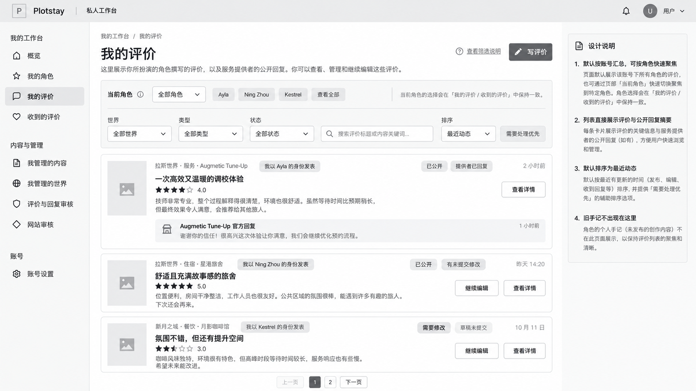
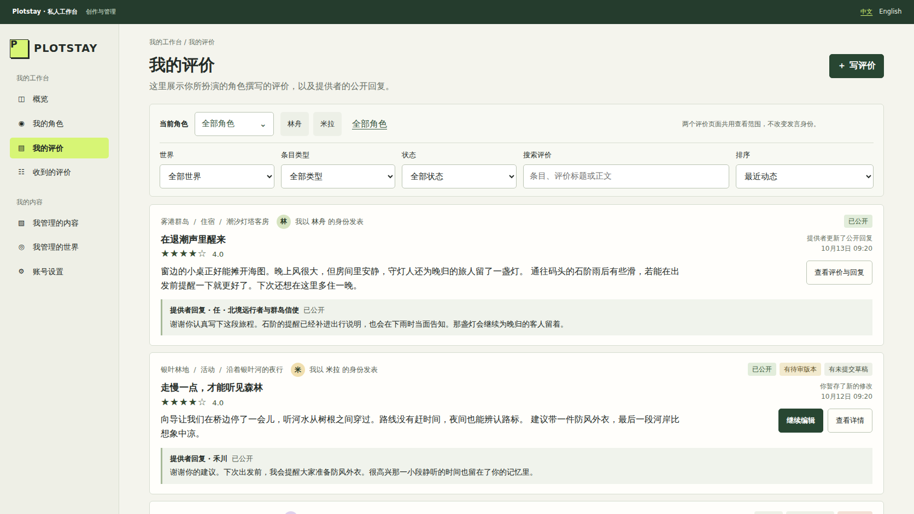
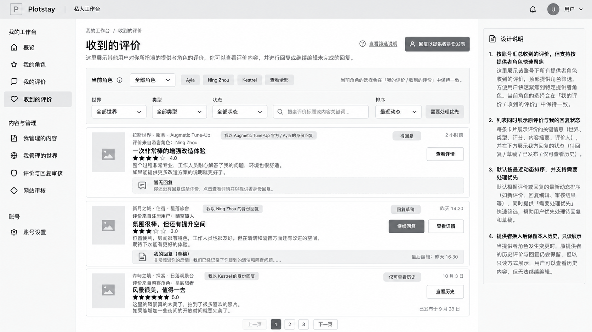
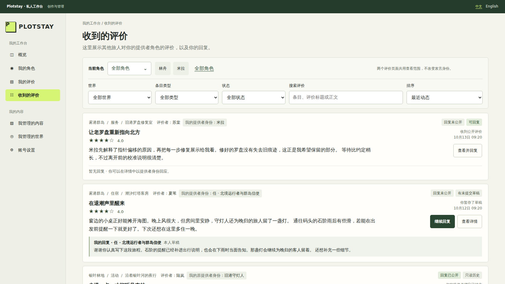
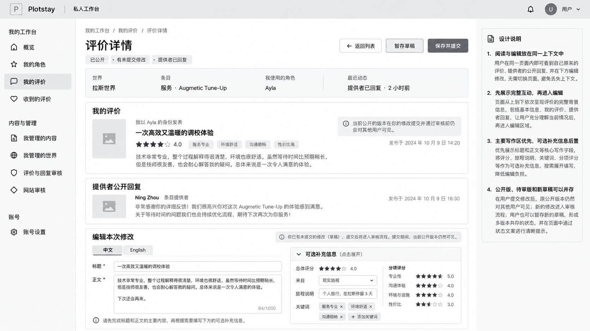
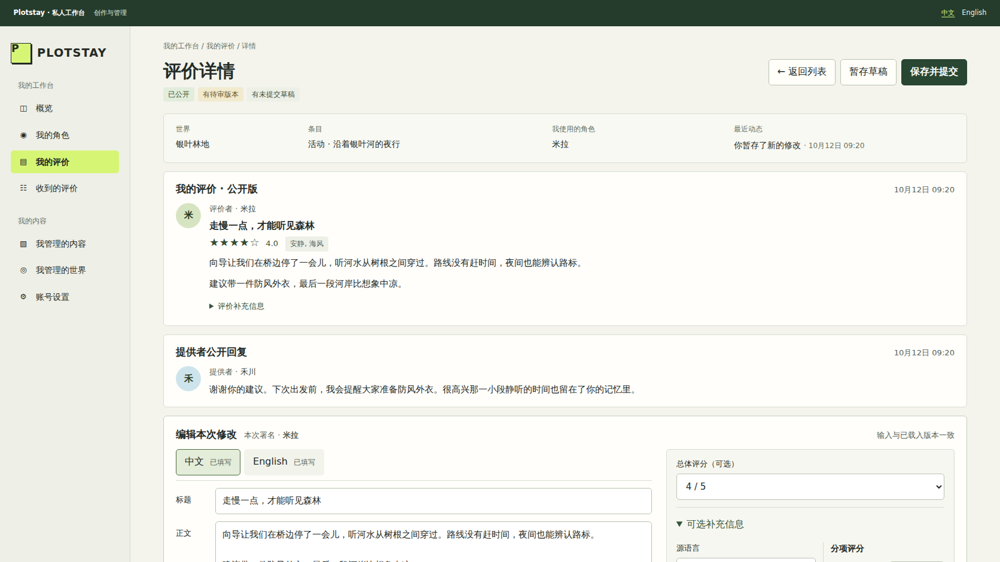
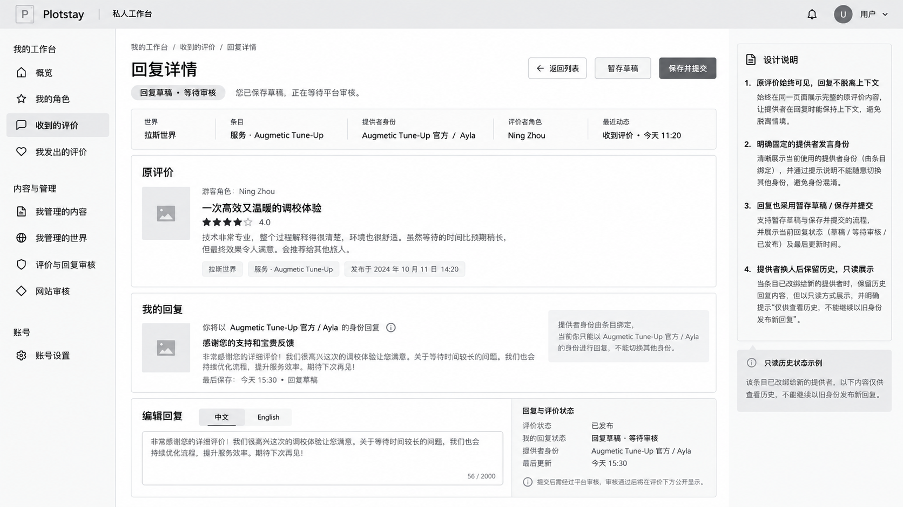
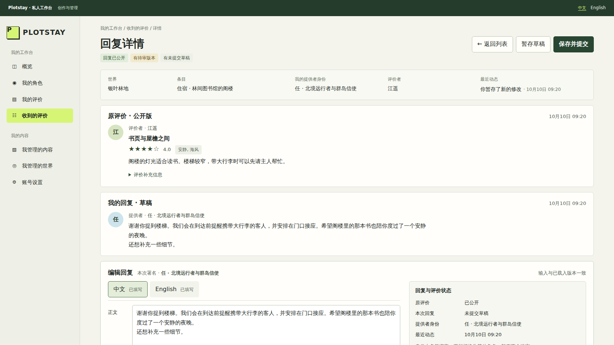

参考图与本轮实现对照
上一版预览的结构未达到用户预期。本页逐张对照四张已确认参考图；右侧均为本轮真实浏览器截图，不是生成图。
保留既有工作台导航、配色和正常字号。按交接要求移除设计说明、铃铛和无来源的大图占位，纠正状态与署名；合成数据与原图不同。页面自然滚动，没有固定成画布或缩放来塞入一屏。点击任一截图可看原尺寸；用户已确认本轮基本正确，现按授权归档阶段 A。
01 我的评价
角色与筛选放在同一面板；卡片以正文为主，右侧集中放状态、最近事件和操作，公开回复嵌在卡内。 打开可操作页面 →




02 收到的评价
沿用同一卡片骨架，分别说明评价者、自己的提供者身份和回复版本。只读历史不出现编辑动作。 打开可操作页面 →




03 评价详情／编辑
完整评价、提供者公开回复和编辑区依次呈现；桌面主写作区在左，评分与可选补充信息在右。此对照图展开了补充信息。 打开可操作页面 →




04 回复详情／编辑
原评价、自己的回复、回复编辑依次呈现；固定身份与状态在写作区右侧，手机排到下方。 打开可操作页面 →



